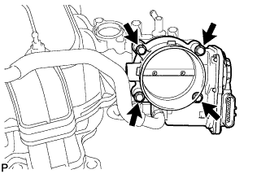

INTAKE MANIFOLD > REMOVAL |
| 1. DISCHARGE FUEL SYSTEM PRESSURE |
 |
Disconnect the 2 fuel pump ECU connectors.
Connect the cable to the negative (-) battery terminal.
Start the engine. After the engine has stopped on its own, turn the engine switch off.
Crank the engine again, and then check that the engine does not start.
Loosen the fuel tank cap, and then discharge the pressure in the fuel tank completely.
Disconnect the cable from the negative (-) battery terminal.
| Condition | Waiting Time |
| Vehicle enrolled in G-BOOK system | 6 minutes |
| Vehicle not enrolled in G-BOOK system | 1 minute |
Connect the 2 fuel pump ECU connectors.
| 2. DISCONNECT CABLE FROM NEGATIVE BATTERY TERMINAL |
| Condition | Waiting Time |
| Vehicle enrolled in G-BOOK system | 6 minutes |
| Vehicle not enrolled in G-BOOK system | 1 minute |
| 3. REMOVE EGR VALVE ASSEMBLY |
Remove the EGR valve (Click here).
| 4. REMOVE COWL TOP VENTILATOR LOUVER SUB-ASSEMBLY |
Remove the cowl top ventilator louver (Click here).
| 5. REMOVE ENGINE ROOM SIDE COVER LH |
 |
Remove the 4 clips and engine room side cover LH.
| 6. REMOVE ENGINE ROOM SIDE COVER |
 |
Remove the 4 clips and engine room side cover.
| 7. REMOVE WATER PIPE AND HOSE SUB-ASSEMBLY |
Detach the clamp.
Disconnect the 6 water hoses and remove the 2 nuts and the water pipe and hose.
| 8. DISCONNECT NO. 4 WATER BY-PASS PIPE |
Remove the 2 bolts and disconnect the No. 4 water by-pass pipe.
| 9. REMOVE VENTILATION HOSE ASSEMBLY |
 |
Disconnect the ventilation hose from the ventilation pipe of the cylinder head cover LH and RH.
Remove the bolt and ventilation hose.
| 10. REMOVE RADIATOR RESERVOIR ASSEMBLY |
 |
Disconnect the radiator reservoir hose from the radiator.
Remove the 3 bolts and radiator reservoir.
| 11. REMOVE AIR TUBE SUB-ASSEMBLY |
Disconnect the manifold absolute pressure sensor connector and detach the clamp.

Detach the 2 wire harness clamps from the air tube bracket.
Disconnect the No. 2 air injection system hose from the air switching valve LH.
Disconnect the No. 1 air injection system hose from the air switching valve RH.
Disconnect the air hose from the air pump.
Remove the 5 bolts and air tube.
| 12. REMOVE INTAKE MANIFOLD |
 |
Disconnect the No. 4 water by-pass hose.
Disconnect the throttle body connector.
Disconnect the PCV valve hose.
 |
Disconnect the purge VSV connector.
Disconnect the purge line hose from the purge VSV.
Disconnect the vacuum switching valve connector (for ACIS).
 |
Remove the nut and disconnect the wire harness from the wire harness bracket.
Detach the 3 wire harness clamps from the 3 wire harness brackets.
Disconnect the fuel tube from the fuel delivery pipe (Click here).
Disconnect the fuel tube from the No. 2 fuel delivery pipe (Click here).
Remove the 2 nuts, 8 bolts, intake manifold and 2 gaskets.
 | Bolt |
 | Nut |
| 13. REMOVE FUEL TUBE SUB-ASSEMBLY |
 |
Remove the bolt and fuel tube from the intake manifold.
Remove the 2 bolts and 2 wire harness brackets.
| 14. REMOVE V-BANK COVER BRACKET |
Remove the 2 bolts and bracket.
| 15. REMOVE V-BANK COVER PIN |
Remove the V-bank cover pin from the intake manifold.
| 16. REMOVE STUD BOLT |
Using an E5 "TORX" socket wrench, remove the 2 stud bolts.
| 17. REMOVE VACUUM SWITCHING VALVE ASSEMBLY (for ACIS) |
Disconnect the 2 vacuum hoses from the vacuum switching valve.
Remove the bolt and vacuum switching valve.
| 18. REMOVE PURGE VSV |
Disconnect the purge line hose from the intake manifold.
Remove the bolt and purge VSV.
| 19. REMOVE MANIFOLD ABSOLUTE PRESSURE SENSOR |
 |
Disconnect the manifold absolute pressure sensor connector.
Remove the bolt and manifold absolute pressure sensor.
Remove the O-ring from the manifold absolute pressure sensor.
| 20. REMOVE THROTTLE BODY ASSEMBLY |
|  |
Remove the 4 bolts, throttle body and gasket.